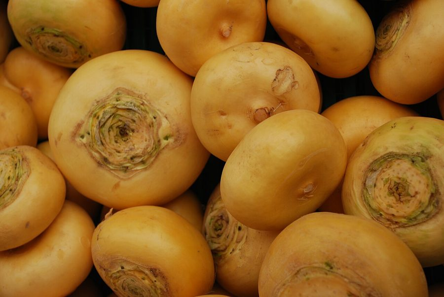

शलजमTurnip and Field Mustard
Brassica rapa · Brassicaceae · FLR-0269

- Scientific name वैज्ञानिक नाम
- Brassica rapa L.
- Family कुल
- Brassicaceae
- Hindi हिंदी
- शलजम
- Local names स्थानीय नाम
- shalgam, shaljam, turnip, field mustard
- Status here यहाँ की स्थिति
- cultivated
- Movement आवागमन
- Resident, here all year
- Known from कहाँ दर्ज
- Others have published records from the Basti–Ayodhya districts बस्ती–अयोध्या के ज़िलों से दूसरों के प्रकाशित अभिलेख
- IUCN IUCN
- not evaluated
- Review समीक्षा
- audited and independently read
When to look कब देखें
Expected mainly in October, November, December, January, February, March. मुख्यतः अक्टूबर, नवंबर, दिसंबर, जनवरी, फ़रवरी, मार्च में अपेक्षित।
Uses and possibilities उपयोग और संभावनाएँ
“Traditional medicine” means a documented traditional use, not a claim that it works. Nothing on this page is medical advice.
Drawn from the documented uses in the profile below, where each is labelled traditional, current or a research lead. All uses →
Tell it apart from इनसे अलग पहचानें
शलजम / Turnip and Field Mustard
Brassica rapa L. — Brassicaceae
शलजम — सर्दी की सब्जी, जिसकी सफेद या हल्की बैंगनी जड़ें पौष्टिक होती हैं। पत्तियाँ (सरसों या मस्टर्ड ग्रीन्स) खट्टी और तीखी, बहुत स्वादिष्ट होती हैं, सर्दियों में प्रमुख साग है। जड़ें भी सलाद में या उबालकर खाई जाती हैं। खेतों में बहुत आम, कम खेती-बारी से उगती है।
Quick Identification त्वरित पहचान
| Feature | Description |
|---|---|
| Root | Globular or slightly flattened, 5–8 cm diameter, white or pale purple skin, white flesh |
| Leaves | Alternate, lyrate (lyre-shaped), lobed and toothed, 15–30 cm, blue-green, thick-veined |
| Plant height | 20–40 cm at maturity |
| Smell | Pungent, characteristic mustard-like odour |
Field tip: A winter crop with a white or pale root and deeply lobed, pungent mustard-like leaves. The roots are flatter and less colourful than beetroot. The leaves have a strong smell when crushed — characteristic of the Brassicaceae family.
Morphology आकारिकी
Biometrics (typical measurements for Brassica rapa in northern India):
| Measurement | Range |
|---|---|
| Root diameter | 5–8 cm |
| Root weight | 150–500 g |
| Leaf length | 15–30 cm |
| Plant height | 20–40 cm |
Root: Globular to slightly flattened; skin white, cream, or pale purple; flesh white, firm, with a peppery taste.
Leaves: Alternate, deeply lyrate (lyre-shaped), with a large terminal lobe and several smaller lateral lobes, all toothed and wavy. Colour blue-green to dark green. Texture thick and somewhat fleshy. Smell pungent, mustard-like.
Flowers: (rarely in the vegetable crop) Yellow, in terminal racemes; the plant is harvested before flowering.
Root system: Taproot with spreading laterals.
हिंदी: जड़ें सफ़ेद, सपाट। पत्तियाँ बहुत कटी-फटी, तीखी गंध।
Behaviour & Ecology व्यवहार और पारिस्थितिकी
Turnip and field mustard are cool-season crops native to Central Asia and domesticated for their edible roots and leaves. The plant is well-suited to the rabi season in northern India and is one of the most widely cultivated winter vegetables in eastern UP. It is highly hardy, tolerant of poor soils, and rarely affected by major pests in the region. The crop is sometimes grown as a cover crop or green manure in agricultural systems.
The plant is biennial but grown as an annual for root and leaf harvest.
हिंदी: सर्दी की सबसे आसान सब्जी। कमज़ोर जमीन पर भी उगती है। कीटों और रोगों से कम प्रभावित।
Life Cycle / Phenology जीवन चक्र
| Month / Season | Event |
|---|---|
| August–September | Field preparation; seed sourcing |
| September–October | Sowing; germination |
| October–November | Leaf development; root development begins |
| December–January | Peak growth; leaf harvesting may begin |
| January–March | Root maturity; peak harvest |
| March onwards | Plant bolts; deteriorates if unharvested |
From sowing to harvestable stage: 60–90 days, depending on variety and conditions.
हिंदी: अक्टूबर में बीज, दिसंबर-मार्च में तोड़ाई।
Cultivation Calendar कृषि कैलेंडर
| Stage | Month(s) | Season |
|---|---|---|
| Field preparation | August–September | Pre-rabi |
| Sowing (broadcast or line) | September–October | Rabi onset |
| Thinning | October | Early rabi |
| Nitrogen fertilizer application | November | Mid-rabi |
| Light irrigation (2–3 times) | October–February | Rabi |
| Pest monitoring | October–March | Rabi |
| Leaf harvesting (selective) | December onwards | Rabi |
| Root harvesting | January–March | Peak rabi |
Associated Species / Interactions संबंधित प्रजातियाँ
- Crop rotation: Often follows Paddy in rice-based systems; precedes summer crop.
- Garden companions: Grown alongside Beetroot and Palak Beet and other rabi vegetables.
Pests and Diseases कीट और रोग
- Cabbage butterflies and their larvae: feed on leaves; hand-picking effective.
- Flea beetles: on seedlings; usually self-limiting.
- Root knot nematode: in some soils; manage by rotation.
- Generally hardy; major pests rare in eastern UP.
Agricultural / Human Relevance कृषि प्रासंगिकता
Vegetables:
Both roots and leaves are edible and commonly consumed in eastern UP. The roots are white, mildly peppery, and eaten boiled, roasted, or in curries. The leaves (sarson or mustard greens) are the primary product for many farmers; they are eaten cooked, either alone or as a side dish. The leaves are one of the most popular winter vegetables in the region, sold fresh in all markets from November to March.
Nutritional value:
Leaves are rich in vitamins (especially A, C, K), minerals (calcium, iron), and fibre. Roots are lower in nutrients but provide carbohydrates.
Cultivation advantages:
The crop is extremely hardy, tolerating poor soils, erratic rainfall, and pest pressure. Seeds are cheap. Yields are high. The crop requires minimal external inputs. Farmers often save their own seed for the next season.
Traditional use:
In Ayurvedic tradition, mustard leaves are considered warming (ushna) and are believed to support digestion. No high-level medicinal evidence, but the leaves are nutritious.
हिंदी: सर्दी की सबसे आम सब्जी और साग। पत्तियाँ सरसों या साग के नाम से बिकती हैं। जड़ें भी खाई जाती हैं। बहुत आसान, कम खर्च।
Expected Locally स्थानीय रूप से अपेक्षित
Not a field record. Written from published accounts for eastern Uttar Pradesh. No confirmed local sighting yet — if you have seen it, that is what the atlas needs.
अभी तक स्थानीय पुष्टि नहीं। यह विवरण प्रकाशित स्रोतों से है, किसी अवलोकन से नहीं।
Expected as the most widely cultivated winter leafy vegetable throughout Basti district, visible in all gardens and vegetable fields from October to March. Fresh leaves and roots are sold in all local markets during the rabi season.
Distribution वितरण
Global range: Domesticated from wild Brassica rapa subsp. sylvestris of temperate Eurasia; cultivated worldwide in cool-season regions.
In India: Widely cultivated in all states, especially in northern regions and the Indo-Gangetic plain.
In Uttar Pradesh: Cultivated throughout; one of the most common rabi vegetables.
In Basti district / eastern UP: The most common winter vegetable; cultivated in virtually every village.
Research Questions शोध प्रश्न
Anyone can investigate these | कोई भी इन प्रश्नों की जाँच कर सकता है
- How many households in a village grow turnip/mustard, and what proportion of rabi vegetable area does it occupy? — Village census of rabi crops.
- Do farmers distinguish between varieties (white vs. purple root; early vs. late)? / क्या किसान सफ़ेद और बैंगनी शलजम को अलग मानते हैं? — Farmer interviews; seed source documentation.
- How many times can leaves be harvested before the root crop is compromised? — Harvest trial comparing multiple-harvest vs. single-harvest plots.
- What is the economic return per hectare for leaf production vs. root production vs. both? — Farm-level yield and income documentation.
- Can any local insect herbivores be used as biological control of cabbage butterfly? — Observation and rearing trials.
Similar Species मिलती-जुलती प्रजातियाँ
| Species | How to tell apart | हिंदी |
|---|---|---|
| Beetroot and Palak Beet (Beta vulgaris) | Root dark red or purple; leaves red-veined; different family (Amaranthaceae) | लाल जड़, अलग पत्तियाँ |
| Cabbage (Brassica oleracea) | No root enlargement; leaves form a head; different subspecies | सिर बनाती है |
| carrot (Daucus carota) | Root orange; fine, feathery leaves; different family (Apiaceae) | नारंगी जड़, बहुत पतली पत्तियाँ |
Field rule: A winter vegetable with a white root and deeply lobed, pungent mustard-like leaves is turnip.
Taxonomy & Classification वर्गीकरण
Original description. Brassica rapa L., 1753, Species Plantarum. The crop includes multiple subspecies (subsp. rapa for turnip, subsp. pekinensis for Chinese cabbage, subsp. napus for rape/canola, among others).
Subspecies. Multiple subspecies and cultivar groups; the turnip group (subsp. rapa) and mustard greens are primary in eastern UP.
Family and order placement. Brassicaceae (mustard family), order Brassicales. Genus Brassica comprises several important crop species.
Phylogenetic notes. Brassica rapa is derived from wild Brassica rapa subsp. sylvestris, a weedy species of temperate Eurasia.
IUCN status rationale. Not evaluated. Widely cultivated; crop status.
Photo Gallery फोटो गैलरी
Photos needed आवश्यक फोटो
- [ ] Plants in field with leaves visible (पूरे पौधे)
- [ ] Harvested roots and leaves (तोड़े हुए)
- [ ] Leaves prepared as a cooked vegetable (खाना तैयार)
No photos yet — add field photos to media/species/turnip_and_field_mustard/ and run node scripts/sync_photos.js.
References संदर्भ
- Linnaeus, C. (1753). Species Plantarum. Laurentii Salvii, Holmiae, vol. 2, p. 667. [original description]
- Indian Council of Agricultural Research (2021). Handbook of Agriculture. ICAR, New Delhi.
- Chadha, K.L. (2010). Handbook of Horticulture. ICAR, New Delhi.
- Botanical Survey of India. Flora of Uttar Pradesh. BSI, Kolkata.
- Srivastava, K.C. & Chopra, S.L. (1983). Vegetable breeding and seed production. Journal of the Indian Society of Agricultural Science 51: 234–248.
- GBIF Occurrence Data — Brassica rapa, India (2020–2026).
Source file: species/flora/crops/turnip_and_field_mustard.md